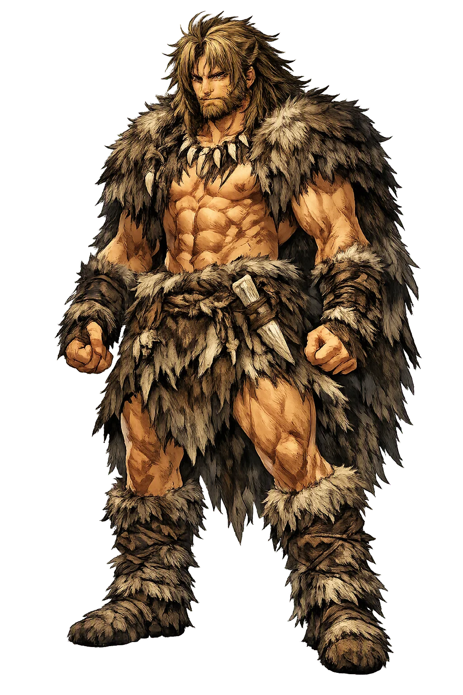
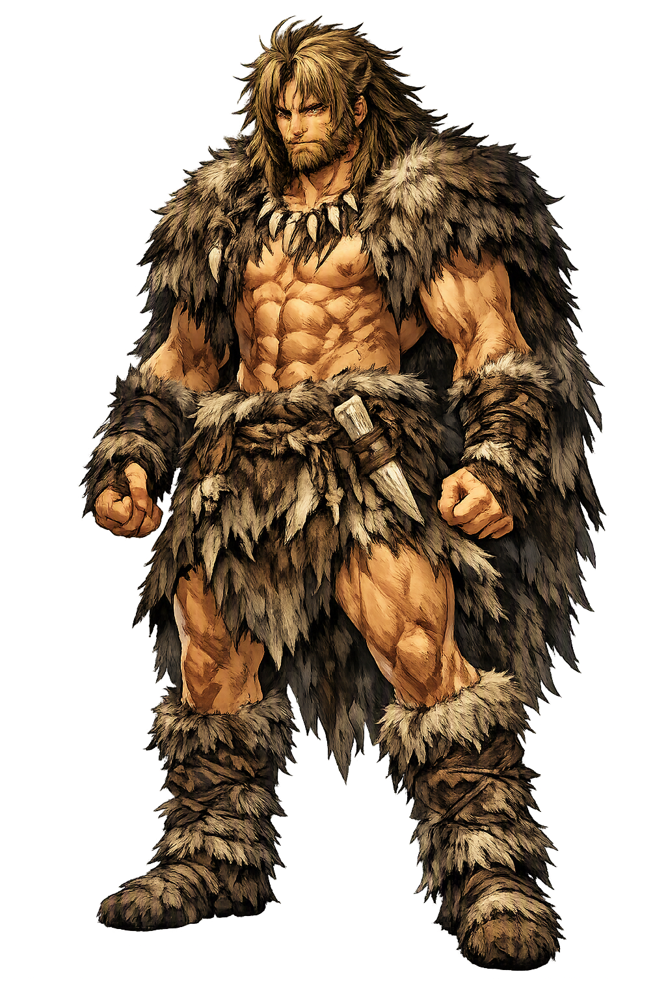

Unicode restoration and ASCII comparison
𒂗𒆠𒄭
The name in its original Mesopotamian form. Enkidu (𒂗𒆠𒄭) is attested in the source tradition — “Lord of the pleasant place”. Its original diacritics and script distinctions carry the full phonetic and orthographic weight of the source tradition.
enkidu
The plain enkidu form is identical to the Unicode restoration. Because this name is already written in Latin letters, no diacritics, stress, or script information were lost — only capitalization differs.
Enkidu
The Unicode restoration does not need to recover lost marks for Enkidu. Its value is canonical spelling and consistent cataloguing, not the reconstruction of erased orthography. The domain is readable as-is to both DNS and humanity.
Enkidu.com → enkidu.com
The non-ASCII characters in Enkidu are encoded while the ASCII remains visible. To the DNS, it is Punycode. To humanity, it is Enkidu.
How Enkidu travels from ancient script to the modern URL
Owned, ideal, and ASCII forms of Enkidu
Enkidu
Restores 𒂗𒆠𒄭. The full Unicode restoration. enkidu.com is not in the PuniCodex collection — it is watched for release; if it drops, this temple upgrades to an owned flagship.
How Enkidu was spoken
Wilderness, Friendship, Mortality
Enkidu is the man who began as a beast and became a brother. Molded from clay by the goddess Aruru, he ran with gazelles, drank at the watering hole, and broke the traps of the hunters until a woman taught him to be human. His friendship with Gilgamesh is the pivot on which the Mesopotamian epic turns: it transforms a tyrant into a seeker, and it ends with the first great lament for a dead friend in world literature.
Born from clay and running with animals, he is the untamed self before language, bread, and law.
His bond with Gilgamesh is the epic's moral center; they fight, embrace, and never leave one another.
He fights beside Gilgamesh against Humbaba, the demon-warden of the sacred timber.
His death — chosen by the gods as punishment — sets Gilgamesh on the quest for eternal life.
Stories of Enkidu
Enkidu's story is told in Sumerian poems and in the Standard Babylonian Epic of Gilgamesh. He is not a king or a god but the necessary other: the mirror in which Gilgamesh first sees himself, and the corpse that teaches him that no human life is endless.
When the people of Uruk cry out against Gilgamesh's tyranny, the gods instruct the birth-goddess Aruru to create a rival. She washes her hands, pinches off a lump of clay, and throws it into the wilderness. Thus Enkidu is born — a hairy wild man, covered with hair like an animal, ignorant of people and bread, drinking from the water-holes with the gazelles (Epic of Gilgamesh, Tablet I; cf. Sumerian Bilgames and the Netherworld, ETCSL 1.8.1.4).
A hunter sees Enkidu destroying his traps and complains to Gilgamesh. The king sends Shamhat, a temple prostitute of Ishtar, to tame him. For six days and seven nights she lies with him beside the watering hole; afterward the gazelles flee from him, and he learns to eat bread and drink beer. She dresses him in clothes, teaches him speech, and brings him to Uruk to meet Gilgamesh (Epic of Gilgamesh, Tablet I).
At the door of a bridal chamber Gilgamesh is about to exercise his iḫtu — the royal right to sleep with a bride first — when Enkidu blocks his way. They grapple in the street like two bulls, shattering the doorposts, until Gilgamesh prevails. Instead of enmity, the fight begets friendship; they embrace as brothers and swear loyalty. The tyrant finds his equal, and the wild man finds his city (Epic of Gilgamesh, Tablet II).
Gilgamesh proposes a journey to the Cedar Forest to slay Humbaba, the giant warden appointed by Enlil. Enkidu has lived there and warns of the danger, but he accompanies his friend. With the help of the sun-god Shamash's winds, they defeat Humbaba and fell the cedars. Enkidu urges Gilgamesh to kill the captive demon; the act wins them glory but seals their fate (Epic of Gilgamesh, Tablets III–V).
After Gilgamesh rejects the goddess Ishtar, she demands the Bull of Heaven from Anu to destroy Uruk. Enkidu and Gilgamesh kill the bull. Enkidu tears off its right thigh and throws it in Ishtar's face, shouting that he would do the same to her if he could lay hands on her. The gods assemble and decide that one of the two friends must die: Enkidu, the lesser, is chosen (Epic of Gilgamesh, Tablet VI).
Enkidu sickens for twelve days. In a dream he sees the underworld, the House of Dust, where the dead wear feathers like birds and sit in darkness. He curses the hunter and Shamhat who civilized him, then blesses Shamhat when Shamash reminds him that she gave him Gilgamesh. He dies in Gilgamesh's arms. His friend covers his face like a bride, heaps dust on his own head, and refuses for seven days to let the corpse be buried (Epic of Gilgamesh, Tablets VII–VIII).
Enkidu asks what it costs to become human. Before Shamhat he is innocent but alone, speechless among his animals. After her he is clothed, fed, eloquent, and friend to a king — but also mortal, exiled from the watering hole, and sentenced to die for his loyalty. Civilization, the epic suggests, is bought with separation: from the wild, from the body, from the illusion that the gods will spare those we love.
Enter Extended Lore